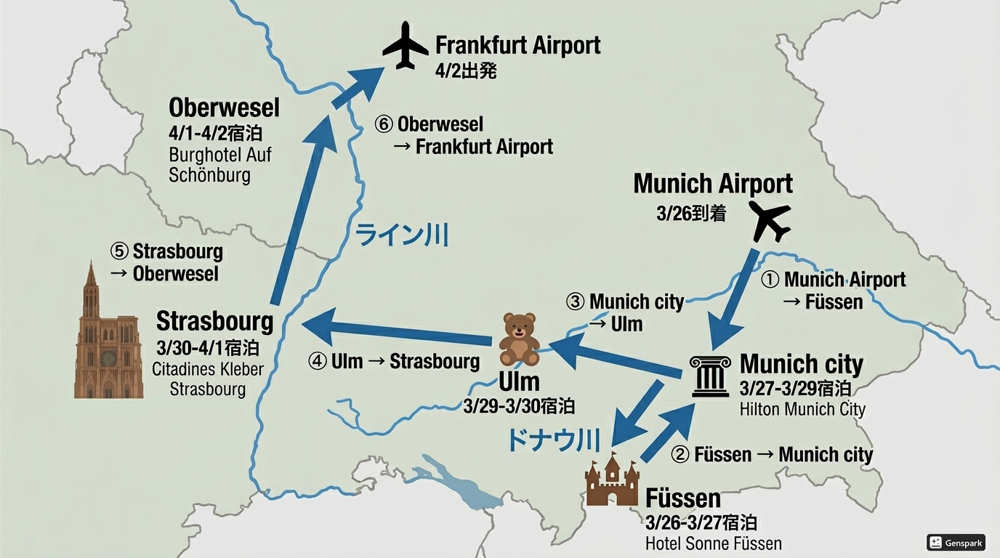

2フライト利用
5ホテル
6都市
シュタイフ聖地
ノイシュヴァンシュタイン
🗓️
日程サマリー Itinerary at a Glance
🗺️
旅程マップ Route Map

✈️ ミュンヘン入り → フュッセン → ミュンヘン → ウルム → ストラスブール → オーバーヴェーゼル → フランクフルト発 ✈️
✈️
フライト情報 Flight Information
🛫 往路 OUTBOUND
HND
羽田空港
NH 217
MUC
ミュンヘン空港
23:30
3月25日（水）
6:25
3月26日（木）
🛬 復路 RETURN
FRA
フランクフルト空港
OZ 542
ICN
仁川空港
19:40
4月2日（木）
14:35
4月3日（金）
🔗 乗り継ぎ：OZ 1065 金浦 19:50発 → 羽田 22:00着（4月3日）
🗓️
旅程 Day by Day Itinerary
🌙
25
MAR / 水
🇯🇵 出発日！ いってきます✨
Day 0 — Tokyo → Haneda Airport
📍 東京 · 羽田
-
羽田空港へ移動時間に余裕をもって空港へ。出発前に両替・荷物確認を忘れずに！
-
23:30NH217 羽田発 → ミュンヘン行き ANA全日空所要時間約14時間。機内でゆっくり映画＆睡眠を♪
機内持ち込みにスリッパ・アイマスク・ネックピローがあると快適です。到着後すぐ動けるよう、機内で少し仮眠を取っておきましょう！
🌅
26
MAR / 木
🇩🇪 ミュンヘン到着 → フュッセンへ
Day 1 — Munich Airport → Füssen
📍 München → Füssen
ノイシュヴァンシュタイン城
ホーエンシュヴァンガウ城
フュッセン旧市街
-
6:25ミュンヘン空港到着入国審査・荷物受け取り。EU外からの入国なので余裕をもって。
-
空港で朝食ミュンヘン空港は早朝から多くのカフェ・レストランが開いています。バイエルン風の朝食（ブレーツェル＋ホワイトソーセージ！）もおすすめ🥨
-
フュッセンへ移動空港から電車またはバスで約2〜2.5時間。フュッセンはアルペンロードの終着点で絶景が広がります。
-
フュッセン観光旧市街（アルトシュタット）のカラフルな建物散策、レッヒ滝（Lechfall）、聖マング修道院、フュッセン城（ホーエス・シュロス）など。メルヘンな街並みをお散歩♪
🏨 宿泊 Hotel Sonne Füssen ★★★★
— ルートヴィヒ2世の物語をテーマにした客室が素敵♪
🏰
27
MAR / 金
🏰 ノイシュヴァンシュタイン城 → ミュンヘン
Day 2 — Neuschwanstein Castle → Munich
📍 Füssen → München
ノイシュヴァンシュタイン城（雪景色）
マリエン広場（夜景）
ヴィクトゥアリエンマルクト
-
10:00〜ノイシュヴァンシュタイン城 ガイドツアー 要予約世界一有名なおとぎ話の城！ガイドツアー（約35分）のみ入場可。ガイドツアーは英語・ドイツ語あり。入場料：大人€21。マリエン橋から絶景写真も忘れずに📸
-
ホーエンシュヴァンガウ城も見学（任意）ノイシュヴァンシュタイン城の麓にある「白鳥城」。ルートヴィヒ2世が幼少期を過ごした城です。
-
午後：ミュンヘンへ移動フュッセン→ミュンヘン中央駅まで特急で約2時間。夕方にはチェックイン。
-
夕方〜マリエン広場＆旧市街散策 検討中ミュンヘンの中心広場・マリエン広場を散策。新市庁舎のグロッケンシュピール（からくり時計）や旧市庁舎を眺めながらひと休み。夕暮れ時はライトアップが美しい✨
-
ヴィクトゥアリエンマルクト（青空市場）検討中ミュンヘン最大の青空市場。新鮮な野菜・果物・チーズ・バイエルン名物の食材がずらり。お土産探しにもぴったり🧀
-
ビアホールで夕食 検討中ホフブロイハウス（Hofbräuhaus）やアウグスティナーなど老舗ビアホールでバイエルン料理の夕食。白ソーセージ・プレッツェル・マースビール（1L）で乾杯🥨
ノイシュヴァンシュタイン城のチケットは事前オンライン予約が必須に近い（公式サイト：hohenschwangau.de）。当日券は非常に並びます！200段以上の急な階段があるので歩きやすい靴で。
ミュンヘン到着は夕方ごろの見込み。ホテルチェックイン後、徒歩圏内のマリエン広場・ヴィクトゥアリエンマルクト・ビアホールを気軽に散策できます。翌日（3/28）が終日ミュンヘン観光なので、無理せず夕食がてらの散策がおすすめ🚶
🏨 宿泊 Hilton Munich City ★★★★★
— ミュンヘン市内の5星ホテル
🏛️
28
MAR / 土
🏛️ ミュンヘン終日観光
Day 3 — Munich Full Day
📍 München
新市庁舎・マリエン広場
フラウエン教会
ホフブロイハウス
-
午前ダッハウ強制収容所記念館ミュンヘン近郊（電車で約40分）。ナチス時代の最初の強制収容所跡。歴史の重みを感じながら、平和の大切さを学ぶ場所。入場無料。所要目安：2〜3時間。
-
午後ミュンヘン・レジデンツ（王宮）ドイツ最大の都市宮殿！バイエルン王家ヴィッテルスバッハ家の居城。豪華絢爛な130以上の部屋を見学。王宮博物館＋宝物殿セットがおすすめ（€14）。
-
夕方：マリエンプラッツ散策・ビアホール検討中有名なホーフブロイハウスで本場のバイエルン料理とビールを♪新市庁舎のグロッケンシュピール（仕掛け時計）も見どころ。
ダッハウへはSバーン S2線で約40分（ミュンヘン中央駅から）。慰霊碑や展示室を丁寧に見ると半日かかります。心の準備をして訪問してください。
🏨 宿泊 Hilton Munich City ★★★★★
🧸
29
MAR / 日
🧸 シュタイフ聖地巡礼 → ウルム
Day 4 — Munich → Giengen (Steiff) → Ulm
📍 Giengen → Ulm
ウルム大聖堂（世界一の塔）
フィッシャーファーテル
シュタイフのテディベア🧸
-
早朝ウルムへ移動・ホテルに荷物を預けるミュンヘン→ウルム 約1時間。チェックイン前でも荷物を預けてもらえます。
-
午前中シュタイフミュージアム テディベアの聖地！ウルムから電車で約30分、ギンゲン・アン・デア・ブレンツへ。
📍 Margarete-Steiff-Platz 1, 89537 Giengen an der Brenz
テディベア誕生の歴史を体験できる夢のような空間✨ 入場料：大人€12。 -
シュタイフ アウトレット お買い物タイム📍 Alleenstraße 2, 89537 Giengen an der Brenz（ミュージアムから徒歩圏内）
ぬいぐるみやコレクターアイテムがお得な価格で！限定品も多数。荷物が増える予覚悟で🐻 -
午後ウルム市内観光ウルム大聖堂（Ulmer Münster）：世界一高い教会の塔（143m）！768段の螺旋階段を登ってアルプスを一望📸
漁師の街（Fischerviertel）：ドナウ川沿いの中世の街並み
傾いた家（Das Schiefe Haus）：世界一傾いた宿泊施設（外観見学）
アインシュタインの泉：ウルム生まれの天才物理学者の記念像
シュタイフミュージアムはウルム市内ではなくギンゲン市にあります！ウルム駅からBahn（電車）でKotzenauまたはGiengen行きに乗車（約30〜40分）。本数が少ない路線なので時刻表を事前に確認してください。
🏨 宿泊 Me and All Hotel Ulm, by Hyatt
— ウルム旧市街の素敵なブティックホテル
🥐
30
MAR / 月
🥐 ストラスブールへ移動・観光開始
Day 5 — Ulm → Kehl → Strasbourg 🚋
📍 Ulm → Strasbourg 🇫🇷
ノートルダム大聖堂
プティット・フランス運河
プティット・フランス 夕暮れ
-
午前ウルム → ケール（Kehl）へ移動ウルム→ケール 電車で約1.5〜2時間（乗り換えあり）。ケールはライン川を挟んでフランス・ストラスブールの対岸にあるドイツの街です🇩🇪
-
ケール駅からトラムに乗り換え 国境越え！ケール駅でストラスブールのトラム（路面電車）D線に乗り換え。ライン川の橋を渡り、そのままストラスブール中央駅（Gare Centrale）へ直通！約15〜20分で到着。国境をトラムで越える特別な体験🌉
📍 Kehl Bahnhof → Strasbourg Gare Centrale -
午後ストラスブール大聖堂（Cathédrale Notre-Dame）ピンク砂岩が美しいゴシック建築の傑作。天文時計も必見！高さ142mの尖塔が街のシンボル。
-
プティット・フランス地区 散策ストラスブールで最もフォトジェニックなエリア！川沿いの木組みの家が絵本のような世界を演出。夕暮れ時が特に美しい🌅
-
アルザス料理ディナー検討中タルトフランベ（アルザス風ピザ）とアルザスワインを試して♪ドイツとフランスが融合した独自の食文化を楽しみましょう。
ケール駅のトラムはストラスブール交通局（CTS）のD線。ケール駅とストラスブール中央駅はドイツ・フランス共通のチケット（ユーロゼーンチケット）で乗車可能。ライン川の橋からの景色も素晴らしい✨ トラムは数分おきに運行しているので時刻表を事前に確認しておきましょう。
🏨 宿泊 Citadines Kleber Strasbourg
— クレベール広場そばのアパートホテル
🌷
31
MAR / 火
🌷 ストラスブール 丸一日観光
Day 6 — Strasbourg Full Day
📍 Strasbourg 🇫🇷
-
ヨーロッパ議会・ヨーロッパ宮検討中EUの心臓部！建物の外観見学やビジターセンターへ（要予約の場合あり）。ストラスブールはEUの首都とも呼ばれます。
-
カメルツェル館（Maison Kammerzell）検討中大聖堂前に建つ16世紀の彫刻装飾が施された建物。現在はレストランとして営業中。ランチもおすすめ。
-
グランド・ルー（Grand'Rue）ショッピング検討中アルザスのお土産（クグロフ型・フォアグラ・ゲヴュルツトラミネール）を探して！可愛い雑貨屋も多数。
-
ポン・ヴォーバン（屋根付き橋）検討中17世紀のヴォーバン式堰堤。橋の上から旧市街が一望できるパノラマスポット。日没後のライトアップも美しい✨
-
イル川クルーズ（任意）検討中ストラスブールの旧市街を川から眺めるボートツアー。所要約1時間。料金：約€15〜。
ストラスブールはフランス語とドイツ語が混在するアルザス地方の首都。ショッピングはクレベール広場周辺が充実しています。「ストラスブール・シティパス」を使うと主要観光施設・交通が割引に！
🏨 宿泊 Citadines Kleber Strasbourg
🌊
1
APR / 水
🌊 ライン川沿いを北上、古城ホテルへ
Day 7 — Strasbourg → 途中寄り道 → Oberwesel（Rhein）
📍 Strasbourg 🇫🇷 → Rhein 🇩🇪
シェーンブルク城＆オーバーヴェーゼル
ラインシュタイン城
ライン渓谷の古城
シェーンブルク城（宿泊先）
-
午前中ストラスブール発 → ライン川沿いへ北上ストラスブールから電車でドイツへ再入国🌉 途中どこに寄るかはまだ自由！マインツやマンハイム、ビンゲン・アム・ラインなど、ライン川沿いの街々を経由しながら最終目的地のオーバーヴェーゼルへ向かいます。
-
マインツ（Mainz）に寄り道 検討中ライン川とマイン川の合流点に位置する歴史都市。グーテンベルク博物館、マインツ大聖堂（Dom）、旧市街散策など볼거리が豊富。ストラスブールから約1.5時間でアクセス可能。
-
マンハイム（Mannheim）に寄り道 検討中ライン川とネッカー川の合流する港湾都市。バロック様式のマンハイム宮殿や、街の碁盤目状の区割り（ブロック番号で区を呼ぶユニークな都市構造）が特徴。ストラスブールから約45分とアクセス抜群。
-
ビンゲン・アム・ライン（Bingen am Rhein）に寄り道 検討中ライン渓谷の玄関口。ライン川の小島に建つ白い「マウスの塔（Mäuseturm）」がシンボル。聖ヒルデガルト修道院やワイン醸造所めぐりも楽しめます。オーバーヴェーゼルまで約15km🌊
-
ライン川クルーズ 検討中ビンゲン〜ザンクト・ゴアール間は「ロマンチックライン」の最もドラマチックな区間！岸沿いに古城が次々と現れる絶景ルート🏯 片道約2時間。KD Line等が運航。ローレライの岩も通過！
-
夕方〜夜オーバーヴェーゼル（Oberwesel）着・古城ホテルへユネスコ世界遺産「ライン渓谷中流上部」の中心地。ラインシュタイン城、ゾーネック城など沿岸の古城を眺めながらシェーンブルク城へチェックイン🌟 ライン川の夕景は格別！
寄り道の自由度が高い1日！マインツ・マンハイム・ビンゲンのどこに立ち寄るかは当日の気分や時間次第でOK🎉 乗り降り自由なDB（ドイツ鉄道）で気軽にプランを組み替えられます。ライン川クルーズを楽しむならビンゲンを午前着にするのがおすすめ。
🏨 宿泊 Burghotel auf Schönburg
— 1000年の歴史を誇るオーバーヴェーゼルの古城ホテル！🏰 ライン川絶景
✈️
2
APR / 木
✈️ フランクフルト空港 → 帰路へ
Day 8 — Bingen → Frankfurt Airport
📍 Bingen → Frankfurt ✈️
-
古城ホテルの朝食・チェックアウトシェーンブルク城からのライン川を見渡す絶景の朝食。1000年の歴史を感じる夢のような城でのひと晩、名残惜しいですが…
-
昼過ぎフランクフルト空港へ移動ビンゲン→フランクフルト空港 電車で約1〜1.5時間。余裕をもって出発を。免税手続き（TAX REFUND）がある方はカウンターが混雑するので早めに！
-
空港でお土産・お買い物フランクフルト空港は免税ショップが充実♪最後のお土産タイム🎁
-
19:40OZ542 フランクフルト発 → 仁川行きアシアナ航空。仁川到着 翌4月3日 14:35。
国際線は出発3時間前に空港到着が安心。EU内での免税（TAX FREE）購入品がある場合は空港の税関でスタンプをもらう手続きが必要です。チェックイン前に必ず！
🏠
3
APR / 金
🏠 帰国日 おかえりなさい！
Return Day — Seoul → Tokyo
📍 仁川 → 金浦 → 羽田
-
14:35仁川空港 到着乗り継ぎのため仁川→金浦へ移動（空港間シャトルバス約1時間程度）。
-
19:50OZ1065 金浦発 → 羽田行きアシアナ航空。羽田到着 22:00。お疲れ様でした！
-
22:00✨ 羽田空港 到着 おかえりなさい！ ✨素敵な思い出をたくさん持って、無事帰国！お土産の配布もお忘れなく🎁
仁川→金浦の乗り継ぎ時間は5時間15分あります。空港間移動は公式シャトルバス「AREX」か地下鉄・タクシーを利用。仁川空港で韓国のお土産購入タイムにもなりますね♪
📝
持ち物チェック Packing Checklist
📄 重要書類
- ☐ パスポート（有効期限確認）
- ☐ 各ホテルの予約確認書
- ☐ フライトeチケット
- ☐ クレジットカード（VISA/Master推奨）
- ☐ 現金（ユーロ）
🎒 旅のグッズ
- ☐ 歩きやすいスニーカー
- ☐ 防寒着（4月のヨーロッパは肌寒い）
- ☐ 折り畳み傘
- ☐ モバイルバッテリー
- ☐ 変換プラグ（欧州タイプC）